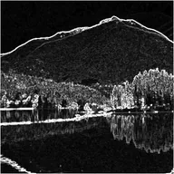

Randdetectie

Lichte lijnen waar het beeld verandert, elders donker. Inkt tekent donkere lijnen op wit; Kleur houdt de eigen kleuren van het beeld op de randen.
Instellingen
| Instelling | Type | Bereik | Standaard |
|---|---|---|---|
| Sterkte | Getal | 0 tot 20 | 2 |
| Stijl | Keuze | Klassiek, Inkt, Kleur | Klassiek |
| Afvlakking | Getal | 0 tot 20 | 1 |
| Drempel | Getal | 0 tot 1 | 0 |
| Omkeren | Aan of uit | – | Uit |